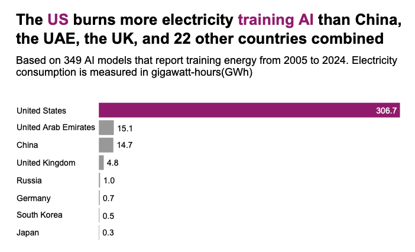

Hello, I'm Dimuthu Attanayake
Data Journalist
About me

I am currently a graduate student at the Data Journalism program at Columbia University in New York. Over the last decade, I have worked as a journalist, a researcher and a business advisor. My cross-border investigations are intersectional and span a range of beats, including the global refugee crisis for Deutsche Welle, illegal and destructive blast fishing in Asia and Africa for the Guardian, the plight of Rohingya refugees for the South China Morning Post, and plastic spills in Asia for Nikkei Asia.
As the South Asia representative of the Reham Al-Farra Memorial Journalism Fellowship of the United Nations in 2024, I covered the UN General Assembly and the Security Council. A mentorship from the Save Our Seas Foundation took me to French Polynesia for immersive scientific reporting, where I reported on how black-tipped reef sharks respond to ocean warming. From Berlin, I reported on how scientists are storing data in plants; in Bangkok, Thailand, I explored how scientists are addressing neglected tropical diseases.
As a Pulitzer Center grantee, I produced a series of pioneering work on how climate change exacerbates gender-based violence for Context News by Thomson Reuters Foundation — this won the 2024 Developing Asia Journalism Award from the Asian Development Bank Institute. I have analysed regional and global geopolitics, and investigated enforced disappearances and transitional justice in post-war Sri Lanka, the 2019 Easter Sunday attacks, and the Sri Lankan economic crisis of 2022 for media houses around the world including Foreign Policy, BBC, and Rest of World.
As a business advisor for an Australian government-led programme, I have strategized value chain interventions and, as a tech researcher, I have worked on developing AI tools for fact-checking. I hold a BSc (Hons) in Economics and Finance from the University of London.
Reporting


Data Visualization
What Should I Do in NYC Today?
A choose-your-own city game. Tell it about your day, get a curated walking plan across 200+ venues.
Play project →The forests America lost, and found again
How every state's forest cover has grown or shrunk since 1945, ranked by census
View project →Plastic Polymer Trade via Panama Canal
Tracking the flow of plastic polymers through one of the world's busiest waterways
View project →America's cheese divide: Walmart vs Whole Foods
Why the same block of Cheddar costs 85% more at Whole Foods than at Walmart
View project →When Sharks Become Intentional Bycatch
Commercially viable species living in the high seas are the least likely to be released back
View project →Dengue Cases in Sri Lanka
An interactive exploration of dengue outbreaks across districts and seasons
View project →Global Carbon Emissions Are Growing
What's driving the projected 2% rise in global carbon emissions in 2017
View project →
How the Countries Building AI Run on 'Dirty' Power
While AI promises to reshape the future, their development use up large volumes of fossil fuels, posing challenges to planetary health
View project →Who Owns America's Debt?
A quarter-century look at who lends America its money, from China's retreat to the rise of tax havens
View project →